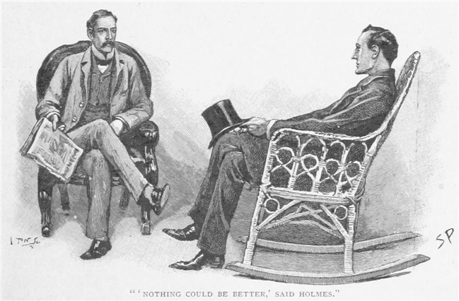
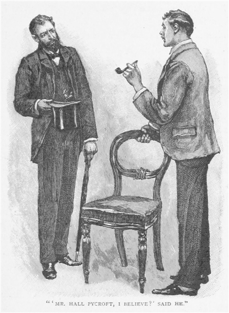
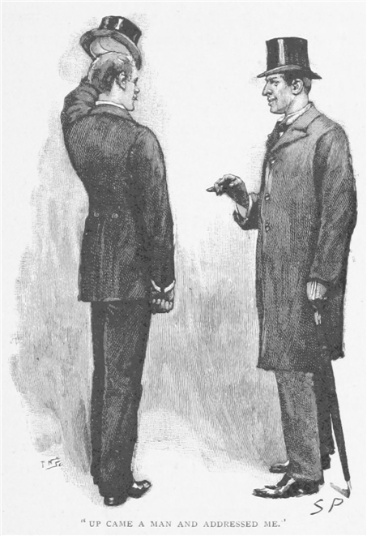
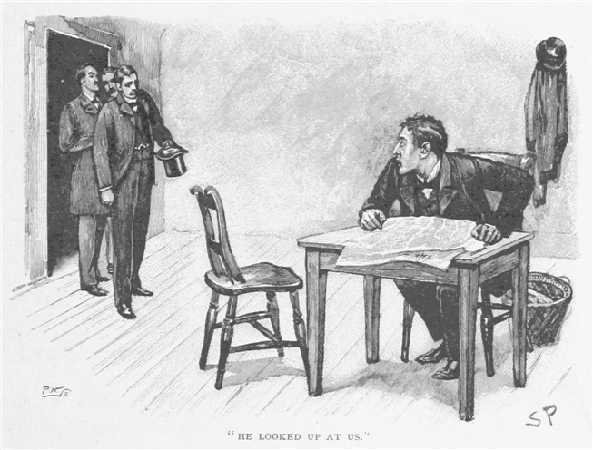
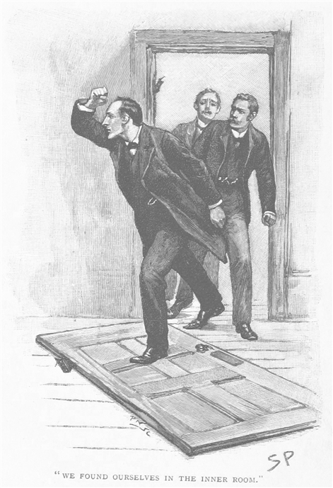
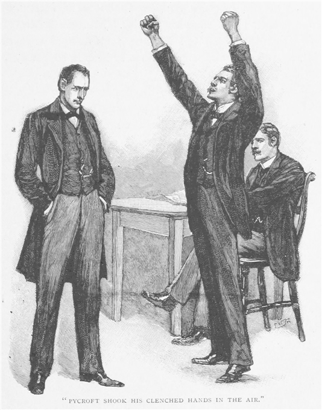
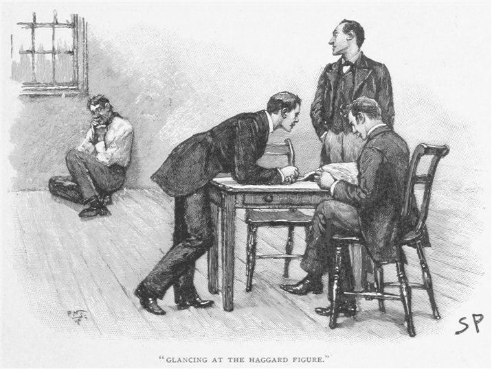

結婚してほどなく、私はパディントン区に医院を買った。ファーカ氏という老人がその売り手で、一時はかなり手広くやっていたのだが、年もあり舞踏病の気もあったために参ってしまい、ひどく寂れてしまっていたのだ。世間の人にとって、人を治す者は自身も健やかたるべき、その薬が自分の病に効かないとなればその人物の医者としての腕前を怪しむ、というのも無理からぬ話である。このように前の持ち主はその医院を傾かせていき、私が購入したときにはもう、年一二〇〇から三〇〇に落ち込んでしまっていた。けれども私は、自分の若さと体力とに自身があったので、ほんの数年のうちにかつてほどの賑わいを見せるものと確信していた。
業務を引き継いでから三ヶ月の間は仕事にかかりきりで、我が友シャーロック・ホームズとも顔を合わせなかった。多忙のあまりベイカー街へも行けなかったし、向こうも職業上の案件をのぞいてはほとんどどこへも出かけなかったからだ。だから驚きだった。六月のある朝、朝食後に腰を下ろして大英医師会報を読んでいると、呼び鈴の音が聞こえ、そのあと我が懐かしき友のあの高くどこか軋むような声が続いたのだ。
「やあ、ワトソンくん。」と友人はつかつかと部屋に上がり込む。「会えて実に嬉しい！ 御前様はもうすっかりいいのだろう、『四人の誓い』事件の関係で、いささか動揺されていたが。」
「おかげさまで二人とも元気だ。」と私は言って、心からその手を握った。
「それから願わくは、」と友人は話を続けながら揺り椅子に座って、「医療にかまけて、僕らのささやかな推理の問題に傾けていた興味を、すっかりなくしてしまってなければいいのだが。」

「ところがどっこい。」と私は答える。「つい昨晩も古い覚書きに目を通して、過去の成果をいくつか整理していたところだ。」
「とすると、君の記録も終わったわけではないと。」
「まったくだ。こんな経験がもっとできるに越したことはないとさえ思う。」
「ではたとえば、今日は？」
「ああ今日でも、君がよければ。」
「バーミンガムくんだりでも？」
「ああ必要なら。」
「すると仕事の方は？」
「隣がいないときは私がやってる。向こうも借りを返したがっててな。」
「ふむ、好都合だ。」とホームズは椅子にもたれかかったまま、細めた目で私を鋭く見つめる。「どうやら君は近頃すぐれないようだ。夏風邪はいつも
「ひどく寒気がして、先週三日ばかり家に閉じこもりだったよ。だけどもうすっかり抜けきったかな。」
「その通り、かなり平気そうだ。」
「にしても、どうしてわかったのかね？」
「まったく、僕のやり口は知ってるだろうに。」
「なら演繹か。」
「まさしく。」
「では何から？」
「君の室内履きから。」
私は自分の履いている新品のエナメル革に目をおろした。
「いったいどうやって――」と言いかけたところで、ホームズは問われるよりも早くその疑問に答えた。
「その履き物は新しい。」と友人。「履いてからまだ何週間もない。だが今、僕に向けている履き物の底は両方ともやや焦げている。そこで少し考えたのが、濡れたから火に当てて乾かしたのでは、ということ。しかし甲のあたりに丸い小さな紙切れがあって、店の印がついている。濡れたのなら剥がれてなければおかしい。ならば君は腰掛けて火に両脚を差し出していた。いくらじめじめした六月とはいえ、そんなことをする人間はそういない、病人以外は。」
ホームズの推理の常であるが、いったん説明されると、今日の件もいかにも単純に思えてきた。友人はこちらの顔色をうかがうと、苦笑いを浮かべる。
「説明すると、どうも『ばれた』という気分になる。」と友人。「根拠のない帰結の方がすこぶる印象深いものだ。さて時に、バーミンガムまで来る覚悟は？」
「あるともさ。どんな事件だい？」
「汽車に乗ればわかる。今回の依頼人が表の四輪馬車にいるのだ。今すぐ出発できるか？」
「あっという間に。」私は隣人への言伝を書き殴り、階段を駆け上がって妻に事情を話し、そして戸口のところにいたホームズと合流した。
「隣が医者か。」と友人は真鍮の札を顎で示す。
「ああ。私と同じで、買い取りの医院だ。」
「古くからある？」
「うちと同じくらいだ。どちらも家屋が建てられてずっとそうなんだ。」
「ほう！ すると君は二軒のうちのいい方を手に入れたと。」
「そのつもりだ。けれどどうしてわかる？」
「この戸口の段だ。君のところは隣より三インチ余計にすり減っている。ところで、馬車のなかのこの紳士が今回の依頼人、ホール・パイクロフト氏だ。今から君を紹介しよう。馬に鞭だ、御者。汽車に間に合うかぎりぎりなのだ。」
私の向かいにいたその男は、がっしりした血色のいい若者で、実直そうな顔にさっぱりつやつやのちょび髭、ぴかぴかの山高帽に落ち着いた黒のあっさりした背広という装いで、当人の見た目をいわゆる――あか抜けた都会の青年、つまりロンドンっ子と呼ばれ、それでいて抜きんでた志願兵を送り出し、この島国で誰よりも優秀な運動選手を輩出している階級そのものへとしていた。その丸く健康な顔には飾らない朗らかさが充ち満ちていたが、口の端はどこか滑稽な悩みのために引きつっているとも取れた。もっとも、我々が一等車に乗り込み、バーミンガムへ旅立ってようやく、どんな厄介事が元でシャーロック・ホームズのところへ飛び込んだのか知ることができたのだが。
「到着までの所要時間はまる七〇分。」とホームズは確認して、「さて、ホール・パイクロフトさん、この我が友人に話していただきたい、あなたの実に興味深い経験を、僕に語ったのと同様に、またできるだけ事細かに。出来事の流れをおさらいするのは僕にとっても助かる。問題というのは、ワトソン、結局裏に何かあるのか、それともないのかなのだが、少なくともただならぬ異常なところがある。君や僕の好むところだ。ではパイクロフトさん、ここからは僕も口を挟みませんので。」
我々の道連れたる青年は、まばたきしつつこちらを見る。
「この件で一番きつかったのが、自分がべらぼうなバカだってはっきりしたことです。そりゃみんなうまく行ったのかもしれないんですけれど、他に何をすればいいのかわからなくって。けれど持ち札をなくした上に何も代わりをとらないだなんて、男がすたるってもんでしょう。ぼくは話し下手なんですけれど、ワトソン先生、こういうことなんです。
ぼくはドレイパ・ガーデンズのコクソン＆ウッドハウスの店に職を持っていたんですけれど、この春先にご存じだと思いますけれどベネズエラ公債でやっちまいまして、どっと傾いてしまったんです。ぼくはそこに五年おりましたので、コクソンの旦那はいよいよ倒産ってときに、えらい立派な推薦状をくれたんですけれど、当然ぼくら店員は路頭に迷いまして、みんなで二七人です。ぼくもあっちこっちへ頼んだんですけれど、他もぼくと同じ境遇の連中ばっかで、長いあいだ冬が続いたってことです。コクソンの時分は週三ポンドもらってまして、その七〇の貯金があったんですけれど、やりくりしてもすぐに底をついてしまったんです。もうどんづまりで、広告に応じる切手もそれを貼る封筒もつらい始末で、事務所の階段を直接昇って靴をすり減らしたんですけれど、職を得るのはもうどこまでも遠く思えてきたのです。
ところがとうとう空きを見つけました。ロンバード街のでっかい株屋のモウソン＆ウィリアム。たぶん東中央のことはご存じないでしょうが、ぼくに言わせればロンドン一にしてもいいほど金のある店です。そこの広告は手紙での応募に限られていて、推薦状と願書を送ったのですけれど、得られるだなんて望みはこれっぽっちもありませんでした。ところが返事が来て、次の日曜に来てくれればすぐにでも新規に採用する、見てくれさえじゅうぶんなら、と言うのです。
どうしてこんなことになったのかだなんて誰もわかりません。経営者が山に手を突っ込みまして最初に引き当てただけだと言う人もいます。とにかくそのとき、ぼくの番が来ましたわけで、こんな嬉しいこと願ってもないです。稼ぎも週一ポンド増えたし、仕事もコクソンでのと同じようなのでよくて。
ここからがこの話の妙なところになるのです。ぼくの部屋はハムステッドのはずれのポッターズ・テラス一七番地で、それで内定した日の午後、座って煙草をやっていると、下宿のおかみが名刺を持ってやってきました。『アーサー・ピナー 金融代行業』と印字されていまして。今までそんな名前聞いたことなかったし、何の用かも思いつかなかったのですけれど、まあ上げてくれと言いました。すると入ってきたのが、中肉中背、黒髪黒目黒鬚の男で、鼻のあたりがてかてか、身のこなしはきびきび、話し方ははきはきで、時間の価値を知っている男のようでした。

『ポール・パイクロフトさんでいらっしゃる？』と相手が言うので、
『そうですが。』と答えてぼくは彼の方へ椅子を置きました。
『最近までコクソン＆ウッドハウスにお勤めで？』
『そうですが。』
『で、ただいまはモウソンの仲買人で。』
『その通りです。』
『ふむ。』とか言いまして、『実は君の金融の才について、まことに並はずれた話をうかがいまして。ご存じ、前コクソンの経営者パーカー。あの男が褒めちぎるもので。』
そりゃそんな話を聞けば嬉しくなるもので、事務所ではいつも如才なくやっていたんですけれど、こんな風に
『記憶力がよろしいと。』と相手が言うので、
『まあ人並みには。』と控えめに答えました。
『離職中も市場の動向をつかんで？』と聞くので、
『ええ、株式相場の表は毎朝。』
『そうそれこそ真の実力を示すもの！』と向こうは声を張り上げまして、『成功への道！ 恐縮だが試させていただく。ふうむ、エアーシアの値は？』
『一〇五から一〇五と四分の一。』
『ではニュー・ジーランド整理公債。』
『一〇四。』
『では大英採鉱。』
『七から七・六。』
『素晴らしい！』と相手は諸手をあげて叫びました。『まったく耳にした通りだ。なあ、なあ君、モウソンの店員にしとくにはもったいない！』
こう言い出されてむしろこっちがびっくりで、わかるでしょう。『どうも。』と言ってから、『他の人はぼくをあんまり高く買ってくれませんので。あなただけです、ピナーさん。今の口にありつくまでそりゃもう苦労のし通しでしたので。嬉しいです。』
『はっ、なに。君はもっと上へ行くべき人間だ。君はふさわしい地位にいない。そこでだ、こちらの条件を提示しよう。これから申し出るのは君の能力に比してじゅうぶんと言えないが、モウソンのと比べれば光と陰。ふうむ、モウソンへはいつからご出勤で？』
『月曜日に。』
『ハッハッ！ ちょっとした賭に出てみてもいいくらいだ。君はそこへ絶対に行かない。』
『モウソンのところへ行かないと？』
『いかにも。その日までに、君は仏・中英金物株式会社の営業部長になっていることだろう。フランスの町や村に一三四の支店、その他ブリュッセルやサン・レモなどにもある。』
これにはぼくもはっと息をのんで、『聞いたこともないです。』と。
『それもそのはず、これは極秘で、なにぶん出資金はひそかに集められ、表にはできないほど良いものだからで。実弟のハリー・ピナーが発起人で、分担額に従い社長として取締役会に参加しており、自分がこちらへ渡っているのを知ってましたから、いい人間を手頃に見つけてくれと。若く押しのあって、力のあふれた人物をと。パーカーが君の話をしてくれて、それで今夜ここへ。こちらでまず出せるのはたった五〇〇ぽっちだが。』
『年に五〇〇も！』とぼくは声を張り上げて。
『基本給はそれだけだが、君の仲介した全取引に対して一％の歩合が支払われることになるから、この分が君の給与を上回るものと考えてもらっていい。』
『けれどぼくは金物だなんてさっぱりです。』
『なあに、君は数字に強い。』
もう頭がこんがらがっちゃって、椅子にじっと座ってられなくなったのです。けれどふと、かすかな疑問がすっと出てきたので。
『率直に申し上げます。』と切り出して、『モウソンでもらえるのはほんの二〇〇なのですけれど、モウソンはしっかりしています。けれど正直、ぼくはそちらの会社について何にも知らない――』
『うむ、鋭い、鋭いな！』喜びの絶頂にあるみたいな大声でした。『君こそうちにうってつけの人材だ。選考などせずともじゅうぶんだ。さあ、ここに一〇〇ポンドの小切手がある。ともに働けると思うのなら、これは給与の前金として懐に収めてくれ。』
『こりゃどうもかたじけなく。』とまあ言いまして、『新しい勤めにはいつから取りかかれば？』
『明日の一時にはバーミンガムに。』と相手は言ったのです。『懐に紹介状があるから、それを弟のところへ。弟とはコーポレイション街一二六番地のＢで会えるかと。そこに会社の仮事務所がある。もちろん契約の確認が必要だが、ここでのやりとりで問題はないからな。』
『本当に、何とお礼を言っていいか、ピナーさん。』
『なあに構わん。君は受けるべきものを受けただけ。二、三、ささいなことだが――単なる手続きとして――君のかたわら、そこに紙が一枚ある。それへこう書いてもらえれば。「私は、仏・中英金物株式会社の営業部長として、最低賃金五〇〇ポンドにて職務遂行することに、まったく同意するものである。」』
相手の言うままにすると、その紙は向こうの懐にしまわれたんです。
『もうひとつ子細がある。モウソンの方はどうするつもりで？』
ぼくは喜びのあまりモウソンのことをすっかり忘れていたのです。『一筆書いて辞退を。』と言うと、
『そのようなことは控えなさい。こちらも君のことでモウソンの経営者と一悶着あってな。君のことを尋ねに出向くとひどく機嫌を悪くして、君を口車に乗せて業務やら何やらから離すのかと文句を。こっちもとうとう我慢できずに「いい人材が欲しければそれ相当の額を支払うべきだ」と言った。
「やつはあんたが積んでもこっちの微々たるものを取るはずだ。」と向こうが言うから、
「五ポンド札を賭けてもいい、彼がこっちの申し出を受ければもう二度と本人からの知らせはないからな。」と。
すると向こうは、「はん！ こっちはあいつをドブから拾ってやったんだ、そうやすやすと手放しはしないさ」というのが言いぐさでな。』
『不埒な悪党め。』とぼくは声を張り上げて、『まだ顔を合わせてもないのに。そんなやつのことなんか考えたくもない。絶対に書かないです、あなたがするなって言うんなら。』
『よろしい！ 約束だ。』と言って相手は椅子から立ち上がって、『うむ、弟のためにこんなにいい人材が得られて嬉しい。これが前金の一〇〇ポンドで、こっちが紹介状だ。さあ住所を書いて。コーポレイション街一二六番地のＢ。明日の一時に面会だ。ではおやすみ、君にしかるべき運があるように！』
これがそのときの会話のだいたいです。最近だから覚えてます。わかるでしょう、ワトソン先生、どんなにぼくが、こんなあまりの幸運に喜んだか。噛みしめるあまり夜中まで起きてて、次の日もバーミンガム行きの汽車が着いても、約束までは時間がありあまってたので、ニュー街の宿に持ち物を預けて、そのあと指示された住所へ向かいました。
時間にはまだ一五分ありましたが、たいしたことはないと思ったので。一二六番地のＢは大きな店に挟まれたところに上がり口があって、石の螺旋階段に続いてその上にいくつもの続き部屋、会社や職人に事務所として貸してあるというわけで、入居者の名前が壁の下の方に書いてあるのですけれど、仏・中英金物株式会社というような名前はなくって、しばらくぼくはどぎまぎと立ちつくして、みんなみんな手の込んだ悪戯なんかじゃないのかと思っていると、そこへひとりの男が上がってきて、ぼくに声をかけてきて、その男は前の晩に会ったやつとそっくりで、姿も声も同じだのに、鬚は剃ってて髪はてかてかでした。

『あなた、ホール・パイクロフトさん？』と聞くので、
『はい、そうです。』とぼくは答えて。
『おお！ お待ちしてました。でも時間よりもちょっと早かったんですね。兄の知らせを受け取ったのが今朝で、あなたのことは大絶賛でしたよ。』
『今ちょうど事務所を探していたところです。』
『まだ手前どもの名前は出しておりませんで、先週にこの仮住まいを決めたばかりですから。一緒においでなさい、この件の話をしましょう。』
ついていって、ずいぶん急な階段のてっぺんまで昇ると、そこは屋根のすぐ下で、一組の埃にまみれた空き室があって、絨毯も窓掛けもないところへ通されたんです。自分が前にいたような、ぴかぴかの机にずらりと並んだ仲買人、というような大事務所を考えていただけに、正直言って、目をまっすぐ見開いてしまいました。松材の椅子二脚に小さな机ひとつ、台帳一冊に屑籠ひとつしか、家具がないんです。
『気落ちなさらずに、パイクロフトさん。』と知り合ったばかりの男が、ぼくの顔を眺め回しまして、『ローマは一日にして成らず、手前どもの後ろには莫大な金があります。もっとも事務所ではまだその存在感がありませんが。おかけなさい、それから手紙を拝借。』
渡しますと相手はそれを念入りに読みまして。
『あなたは兄のアーサーをよほど感心させたと見えますね。』と言いまして、『それに兄は人を見る目があります。兄はロンドン派、手前はバーミンガム派と考えが違いますが、今日は兄の薦めに従いましょう。採用は内定とお考えいただければ。』
『具体的な仕事は？』とぼくが聞きますと、
『ゆくゆくはパリの大倉庫の管理を、そこで大量の英国製陶器をフランスに一三四ある代理店へ流してもらいます。買い付けは一週間後に終わりますから、そのあいだはバーミンガムにお残りになって、手伝いをしていただければ。』
『どんな？』
返事の代わりに引き出しから取り出されたのが、大きな赤い本です。
『これはパリの人名録で、人の名前のあとに職業があります。こいつを持ち帰っていただいて、金物商全員を住所とともに抜き出していただきたい。それがあれば手前もたいへん助かるんです。』
『けれど、職業別一覧があるんじゃあ？』とおそるおそる言うと、
『当てになりません。あれは手前どもとやり方が違う。しっかりやって月曜の一二時までに一覧をいただければ。さようなら、パイクロフトさん、勤勉聡明でさえあれば、会社も悪いようにしませんから。』
ぼくはその大きな本を小脇に抱えてホテルに戻ったんですけれど、胸のなかでは気持ちがぶつかりあってて、一方では内定確実、懐に一〇〇ポンド、もう一方には事務所の見た目、壁にない表札、実業家として引っかかる点からして雇い主の姿勢に対する悪印象。とはいっても、どうなるにしても、お金をもらいましたし、仕事に取り組むことにしました。日曜は一日仕事に励んだんですけれど、月曜にはＨまでだけで、雇い主のところに顔を出して、相変わらず殺風景な部屋にいたんですけれど、水曜まで頑張ってまた来てくれと言われたんです。水曜にもまだ終わらなかったので金曜までこつこつ――それが昨日のことでハリー・ピナーさんのところへ持って行ったんです。
『いやあかたじけない。』と相手は言いまして、『仕事の難しさを小さく見積もりすぎたようで。この表があればきっと役に立ちます。』
『だいぶ暇がかかりまして。』と言うと、
『では今度は、』と相手は言って、『家具商の一覧を作っていただきたい。彼らも金物を売るので。』
『わかりました。』
『では明日の夕方七時に来て、進み具合を見せていただければ。根を詰めすぎないように。夕べに二時間ほどデイズ音楽堂に行っても、仕事のあとなら差し支えありませんよ。』と相手が言いながら笑ったとき、ぼくは目に見えたものでぞっとしました。男の左手側から二番目の歯が、金でへたくそに詰めてありまして。」
シャーロック・ホームズは嬉しそうに手をこすりあわせ、私はいぶかしげに依頼人をにらみつける。
「意外という顔をされてますね、ワトソン先生、けれどこういうわけなのです。」とまた話が始まる。「ロンドンでもうひとりと話していたときも、ぼくがモウソンに行かないことに笑った瞬間、たまたま目に入ったんです。まったく同じ感じで歯に詰め物がしてありました。どっちの場合も金のきらめきが目をとらえて。しかも声や姿が同じ、違うところだって剃刀と
沈黙があった。株式仲買人の驚くべき経験が語られたあと、つとシャーロック・ホームズが私に目配せをする。クッションに背をもたれさせながら、嬉しそうな、それでいて品定めするような顔をしていた。まるで彗星接近時の年代物を一口含んだばかりのワイン通のようだ。
「それなりにいい、ワトソン、だろう？」と友人は言う。「僕にとって喜ばしい点がいくつか。思うに君も賛成してくれるだろうが、アーサー・ハリー・ピナー氏と仏・中英金物株式会社の仮事務所で相まみえることは、僕ら両名にしてもそれなりに興味深い経験となろう。」
「だがどうやって会う？」と私。
「いやあ、ごく簡単です。」とホール・パイクロフトの朗らかな声。「おふたりはぼくの友だちで求職中、それで社長のところへつれてきた、っていうのが一番自然でしょう？」
「無論、もちろん。」とホームズ。「ぜひその紳士に会いたい、なおかつ彼のささやかな企みから何かわかるのか確かめたい。君がどう役に立つか、そう、貴重な役割を果たすほどに。それとも可能性として――」と友人は爪を噛み始め、窓の外をぼんやりと見つめる。そうしてそれから一言も聞き出せないままニュー街へとたどり着く。
夜七時、我々は三人してコーポレイション街を下り、その会社の事務所へと向かった。
「時間より前に行っても無駄なんです。」と依頼人は言う。「ぼくと会うためだけにあそこへ来るみたいです、どうも。指定の時刻までがら空きなんです。」
「裏がありそうだ。」とホームズが述べる。
「本当に、そうですよ！」と仲買人が声を張り上げて、「あそこ、ぼくらの前を行くのがやつです。」
指さした先に、小柄で黒髪の身なりのいい男が、道の向かい側を駆け足で歩いていた。様子をうかがっていると、こちら側へ目をやって、夕刊の最新版を大声で売る少年を見つけると、辻馬車や乗合馬車のあいだを走り抜け、ひとつ買い上げた。そして手に握りしめて上がり口へと姿を消した。
「あそこへ行く！」とホール・パイクロフトは叫ぶ。「今入っていったところに会社の事務所が並んでいるんです。来てください、できるだけうまく取りなしますので。」
仲買人の先導で五階まで昇ると、目の前に半開きの扉があって、そこを依頼人が叩く。中へ促す声が内側から聞こえ、入ってみると、そこはホール・パイクロフトが表現した通り家具のないがらんとした部屋だった。唯一の机に座っている男は、まさに外で見た人物で、こちらを見上げた顔からすると、私にはどうもこれまで見たことない顔、悲しみを、いや悲しみ以上のものをたたえたような――一生のうち人がそうは出会わぬ恐怖の形相であるように思えた。額は汗で輝き、頬は魚の腹のように濁った白で、目は思い詰めてぎょろりとしている。男はその仲買人を誰だかわからないかのように見つめていて、私は案内人の顔に表れた驚愕から、これはけしてその雇い主の平生の表情ではないと知った。

「大丈夫ですか、ピナーさん！」と依頼人は声を上げる。
「ええ、具合がよくなくて。」と相手は答え、何とか自分を持ち直そうとしているのがありありとわかったが、乾いた唇をなめて言葉を吐き出す。「ご一緒の紳士方はどなたで？」
「こちらはバーモンジのハリスさん、そしてこちらがこの町のプライスさん。」と仲買人はよどみなく答え、「ふたりともぼくの友だちで、経験のある紳士なんですけれど、しばらくのあいだ失業してて、そんなわけでもしかするとこの会社に勤め口を見つけてもらえるかなと思ったんです。」
「できるとも！ できるともさ！」とピナー氏は不気味な笑みを浮かべて叫ぶ。「ええ、間違いなくみなさんのために何かできましょう。あなたのご専門は、ハリスさん？」
「僕は会計を。」とホームズ。
「ああ、うん、そのような方も必要となりましょう――それからあなた、プライスさんは？」
「事務を。」と私。
「必ずや、当社からみなさんにいい話をしたく。何か決まり次第速やかにお知らせします。だから今はどうかお引き取りを。お願いですから、ひとりにしてください！」
この最後の言葉が男から飛び出たとき、まるで当人にかかっていたはずの自制の縄が、いきなり残らずはち切れたかのようだった。ホームズと私が互いに顔を見合わせていると、ホール・パイクロフトが机の方へ近寄る。
「お忘れですよ、ピナーさん。ぼくは約束してここに、指示を受けに来てるんです。」と言うと、
「わかっている、パイクロフトくん、わかっている。」と相手はやや落ち着いた調子に戻って、「ちょっとここで待っててくれ。ご友人だって一緒に待ってくれないこともないだろう？ 三分したら、ちゃんとよろしくやるから。それまですまないが辛抱をしてもらえれば。」と、男は礼儀正しい所作で立ち上がると、我々にお辞儀をし、部屋の奥隅にある扉から出て行き、後ろ手に閉めてしまった。
「さて何だ。」とホームズがささやく。「僕らをまいているのか。」
「無理です。」とパイクロフトが答える。
「それはなぜ。」
「あの扉の先は内部屋です。」
「出口はない？」
「はい。」
「家具は？」
「昨日は空っぽでした。」
「ならばいったい何ができる。この件にはどこかわからない点がある。ひょっとしなくても、頭のおかしい男がいるとしたら、その男の名はピナーだ。何があの男をふるえさせるのか。」
「私たちが探偵だと勘づいたんでは。」と私は言ってみる。
「そうですよ。」とパイクロフトも言う。
ホームズは首を振って、「今青ざめたのではない、すでに青かったのだ、部屋に入ったときには。」と言い、「ただありうることは――」
その言葉は、内部屋の方から来る、鋭いコッコッという音で妨げられる。
「いったいなんだって自分の部屋を叩いてるんだ？」と仲買人は言った。
再度さらに大きな音、全員で固唾をのんで閉ざされた扉を見つめる。ホームズに目をやると、その顔はこわばり、極度の興奮のため前傾姿勢で身構えている。と、ふいに低いゴボゴボ、ゴロゴロという音、続いて木材を激しく叩く音。ホームズは慌てて部屋を横切り、扉を押す。内側から鍵がかかっていた。その動きに続いて、我々全員の体重を扉にぶつける。蝶番がひとつ弾け飛び、それからもうひとつ、とうとう扉が音を立てて倒れる。その上から飛び込み、我々は内部屋へ。

もぬけの殻だ。
しかし戸惑うのもほんのわずかのあいだ。片隅、今出た部屋に近い方の隅に、もうひとつの扉。ホームズが飛びついて引き開ける。上着とベストが床に落ち、扉の後ろの鈎金から、首まわりに吊り帯を巻き付け、仏・中英金物株式会社社長はぶら下がっていた。膝は引き上がり、首は胴体からものすごい角度で垂れており、扉へ踵が当たって、我々の会話を妨げたあの音を出している。
すぐさま私は男の胴を抱え上げ、ホームズとパイクロフトが、青白くなった皮に食い込んで見えなくなったゴム帯をほどく。それから全員で男を別の部屋へ運び、そこへ寝かせる。顔は土気色で、紫の唇が息を出し入れするたびに泡を吹く――虫の息だ。ほんの五分前まではちゃんと生きていたのに。
「どう思うね、ワトソン？」とホームズが尋ねてくる。
私は男の上にかがんで調べる。脈は弱く滞りがちだが、息は次第に長くなってきており、まぶたにもかすかに痙攣があって、下の白い眼球をわずかに細く見せている。
「かろうじてだが、」と私。「まだ生きてると思う。すぐ窓を開けて、水差しを私に。」
男の襟を外して冷や水を頬に注ぎかけ、腕を上下させていると、とうとう長く自然な息をするようになった。「あとはもう時間の問題だ。」と言って私は男から離れる。
ホームズは机のかたわらに立ち、手を下に深くつっこんで、顎を胸につくまで引いている。
「すぐに警察へ連絡すべきだ。」と友人。「だが正直のところ、来る頃には解決済みで引き渡したい。」
「ぼくにはちんぷんかんぷんです。」とパイクロフトは声を張り上げ、頭をかきむしる。「いったいなんだって、わざわざこんなところまでぼくを呼び出して、その上――」
「ふん！ それはもうはっきりしている。」とホームズは苛立たしげだ。「問題はこの最後の唐突な振る舞いだ。」
「じゃ、他はみんなわかってると？」
「きわめて明白だと思われます。君は何と言う、ワトソン？」
私は肩をすくませ、「正直のところ、手も出ないよ。」
「ほう、ただまず出来事を考えれば、ただ一点に帰着しうる。」
「君はどう見るのかね。」
「ふむ、全体の要点はふたつある。第一は、パイクロフトがこのばかげた会社の勤めに入る際に誓約書を書かせたこと。実にいわくありげだと思わないか？」
「すまんが見えてこんよ。」
「では、なにゆえそんなことをさせたかったのか。事務上のことではない。たいていこの主の取り決めは口頭で、ここで原則を外れる事由はまったくない。わかりませんか、パイクロフトさん、彼らはあなたの筆跡の見本をぜひとも手に入れたかった、ゆえにそうするしかなかったのです。」
「けれどもどうして？」
「その通り。どうして？ それに答えれば、このささやかな問題もいくらか進むというもの。どうして？ うなずける理由はただひとつしかない。誰かがあなたの筆跡を練習して真似したかった、するとまずその手本を得る必要がある。そこで第二の点に移るとすると、それぞれが互いを照らしているとわかる。その点とは、ピナーの要求にある。あなたに内定を辞退させず、それでいてこの大企業の経営者に、まだ会ったことのないホール・パイクロフトなる男が月曜の朝、事務所に来るものとまったく思いこませたままにした。」
「なんてこった！」と叫ぶ依頼人。「僕の目はなんて節穴だ！」
「これで筆跡の点はわかりましたね。空きに申し込んだあなたのものとまったく違う筆跡の誰かが、あなたの場所に収まったなら、もちろん企みはお終いになりましょう。しかし時間を使ってその悪党が練習してあなたの真似ができるようになれば、その地位も安泰というもので、なにせ事務所の誰もあなたを直に見たことがないのですから。」
「誰ひとりとして。」とホール・パイクロフトが声を絞り出す。
「結構、もちろん最重要はあなたが先方をよく思わないようにすることで、なおかつあなたの替え玉がモウソンの事務所で働いているのを知らせるような人物に会わせないこと。だからこそ給与に気前よく前金をつけて、中部へと追いやり、そこでそれなりの仕事を与えてロンドンへ行かせないようにした。あなたの存在が、そのささやかな企みをご破算にするおそれがありますから。これですっかりおわかりでしょう。」
「けれどなんだってこの男は、兄弟にばけたりしなくちゃいけなかったんです？」
「うむ、それも実にはっきりしている。ここにふたりしかいないのは明らかだ。もうひとりは事務所であなたのふりをしている。この男は雇い主の役だが、そのあとで第三者をこの筋へ入れなければ、あなたを雇用主に会わせられないと気づいた。だがやりたくはない。できるだけ外見を変えて、似ているところは、あなたがわからなかったように、家族だから似ているということにできると見込んだ。金の詰め物が運良く見えなければ、おそらくあなたも疑いを抱かなかったでしょう。」

ホール・パイクロフトは両の拳を宙に振り上げ、「ああああ！」と叫び、「ぼくがこんなバカを見ているあいだに、もうひとりのホール・パイクロフトはモウソンで何をしていたんだ？ どうしましょう、ホームズ先生？ 教えてください。」
「モウソンへ電報を打つことです。」
「土曜は一二時で閉店で。」
「ご心配なく。門衛や宿直が――」
「ああそうでした。保有している有価証券が高価ですから警備員が常駐を。そういう話を中心区で聞いた気が。」
「結構。その人物に打電すれば、問題ないかも、あなたと同じ名の仲買人がそこで働いているかもわかるでしょう。今のことはもうはっきりしていますが、あまり判然としないのが、僕たちを見たとたん、悪党の片割れがすぐさま部屋を立ち去り、首を吊った理由です。」
「新聞だ！」うめき声が後ろから聞こえた。その男は身体を起こし、顔がひどく青ざめているが、目は正気に戻っており、喉にまだ巻き付いている赤い幅広の帯を所在なくいじくっている。
「新聞！ そうとも！」とホームズは途端に気が高ぶらせ声を張り上げる。「なんて痴れ者だ僕は！ ここへ来たことに気を取られて、にわかに新聞のことが頭に入ってなかった。いかにも、秘密がここにあるはずだ。」それが机の上に広げられると、勝利の叫びが唇から飛び出す。「これを見たまえ、ワトソン。」と大声だ。「ロンドンの新聞、イヴニング・スタンダードの早売りだ。ここに求めるものがある。見出しを見たまえ。『中心区の犯罪。モウソン＆ウィリアムズ社で殺人。大それた強盗未遂。犯人逮捕。』ここだ、ワトソン。全員が等しく知りたがっているのだから、読み上げてくれるとありがたい。」
紙面の位置からしてロンドンの一大事件というわけらしく、記事にはこうあった。
本日午後、中心区で凶悪な強盗未遂が発生、結果一名が死亡するも犯人は逮捕された。かねてより有名金融会社モウソン＆ウィリアムズには総額一〇〇万ポンドをゆうに超える有価証券が保管されており、経営者はその責任から万一の場合に備えて最新型の金庫を用い、建物内に昼夜武装警備員を置いていた。先週からホール・パイクロフトと名乗る仲買人が新しく社に雇われていたが、この人物が有名な偽造・強盗犯ベディントンなのは間違いないと思われ、その兄とともに五年間の懲役刑を勤め上げたばかりだった。不明だが何らかの方法で、この事務所の仲買人の立場を偽名にて勝ち得て、これを利用して金庫の合い鍵の数々を入手、その金庫室と金庫の配置を完全に把握するに至った。
モウソンでは仲買人が土曜に半日で上がるのを常としているため、中心区警察のトゥーソン巡査部長は一時二〇分過ぎに旅行鞄を抱えて階段を下りる紳士を見て不審に思い、怪しみつつ男を尾行して、ポロック巡査の助けを借り、必死の抵抗にあったが逮捕に成功する。まもなく大胆な強盗が行われたことが判明、一〇万ポンド相当の価値がある米国鉄道社債を初め、炭坑や諸会社の巨額証券が鞄のなかから見つかった。建物内を調べたところ、警備員の惨殺体が折りたたまれた状態で最大の金庫に押し込まれているのが発見され、トゥーソン巡査部長の迅速な行動がなければ月曜まで見つからなかったものと思われる。死体の頭蓋骨は火掻き棒による背後からの一撃で叩き割られていた。ベディントンはなかに忘れ物をしたとの口実で進入し、警備員を殺害後速やかに大金庫を荒らし、そののち強奪品とともに逃亡したに相違ない。常に行動をともにする兄の姿が現在わかっている限り本件に見えないが、警察はその所在について精力的に捜査中である。
モウソンでは仲買人が土曜に半日で上がるのを常としているため、中心区警察のトゥーソン巡査部長は一時二〇分過ぎに旅行鞄を抱えて階段を下りる紳士を見て不審に思い、怪しみつつ男を尾行して、ポロック巡査の助けを借り、必死の抵抗にあったが逮捕に成功する。まもなく大胆な強盗が行われたことが判明、一〇万ポンド相当の価値がある米国鉄道社債を初め、炭坑や諸会社の巨額証券が鞄のなかから見つかった。建物内を調べたところ、警備員の惨殺体が折りたたまれた状態で最大の金庫に押し込まれているのが発見され、トゥーソン巡査部長の迅速な行動がなければ月曜まで見つからなかったものと思われる。死体の頭蓋骨は火掻き棒による背後からの一撃で叩き割られていた。ベディントンはなかに忘れ物をしたとの口実で進入し、警備員を殺害後速やかに大金庫を荒らし、そののち強奪品とともに逃亡したに相違ない。常に行動をともにする兄の姿が現在わかっている限り本件に見えないが、警察はその所在について精力的に捜査中である。

「うむ、僕らはその方面でわずかな手間を省いてやれるというわけだ。」とホームズが目をやったのは、窓際にうずくまる憔悴しきった男。「人の本性とは不思議に混ざり合ったものでね、ワトソン。このように、人を殺す悪党でも死刑になると知られれば、その兄を自殺に向かわせるほどの愛情を生じさせることができる。ともあれ、僕らの行為については選ぶべくもない。博士と僕が見張りに残りますから、パイクロフトさん、あなたは警察を呼びに出ていただけるとありがたい。」